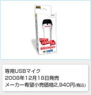

自宅がカラオケボックスに早変わりするのがこのソフト『カラオケJOYSOUND Wii』です。ソフトにあらかじめ収録されている歌は70曲、さらにWi-Fiを通じて
Ｗｉｉポイントを支払うことで、30,000曲以上が自由に歌えるようになります。パッケージ同梱には、Ｗｉｉ専用USBマイクが１本同梱されていますが、もう１本マイク単体を買い足せば、２人でデュエットもできるようになります。
歌いやすいようにキーを変更してみたり、順番を待っている間に次の曲を探して予約したり、他の人が歌っている横でＷｉｉリモコンを振ることでタンバリンやマラカスなどの音を鳴らしたり、本当にカラオケボックスさながらの盛り上がりのできる１本です。
しかも、歌の採点機能もついているので、練習した上達ぶりを点数ですぐに確認できます。またカラオケで歌うだけでなく、歌の音程やリズムの練習ができたり、鳴った音の楽器名や音階を答えるクイズに挑戦できたり、さらに負けるとバツゲーム付きのミニゲームも収録されていたりとパーティゲームとしても非常に楽しめるものになっています。ただし、盛り上がりすぎて歌声や騒ぎ声がご近所の迷惑にはならないようにご注意を。